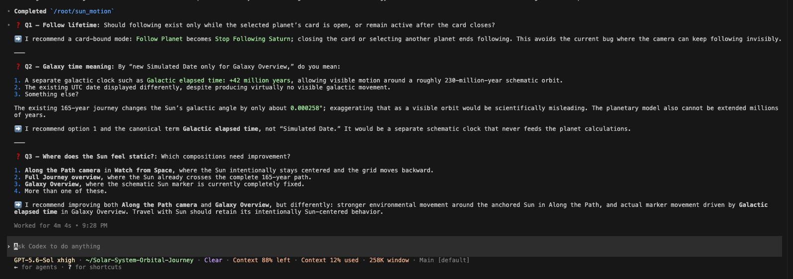
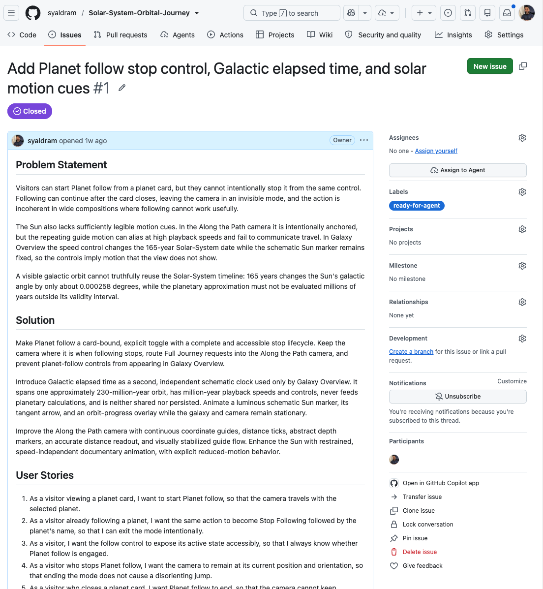
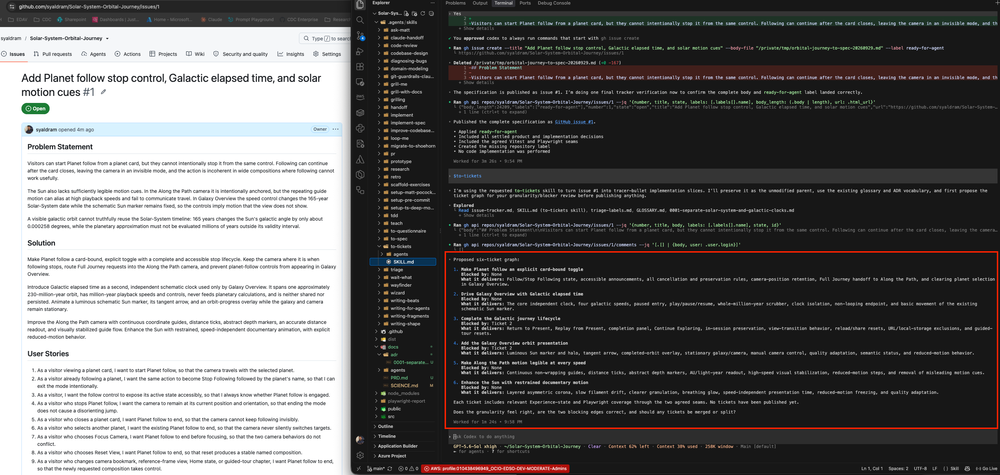
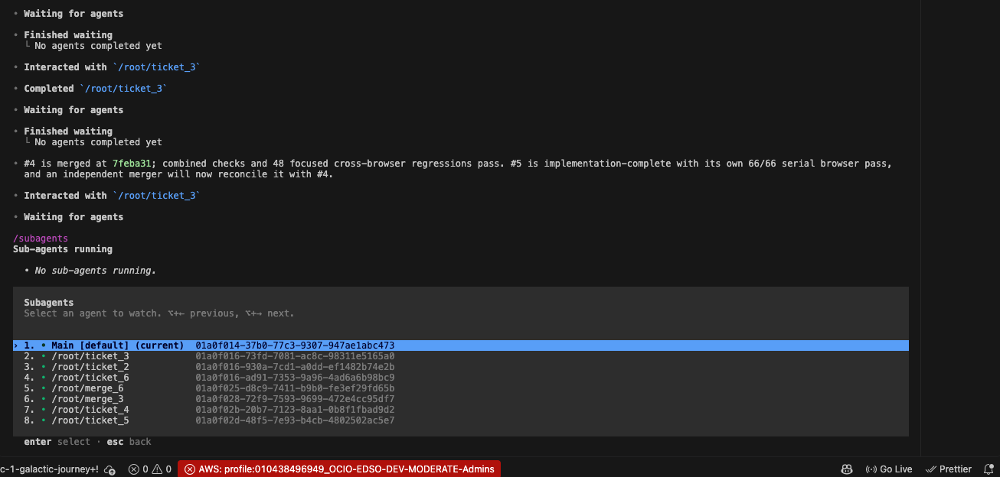
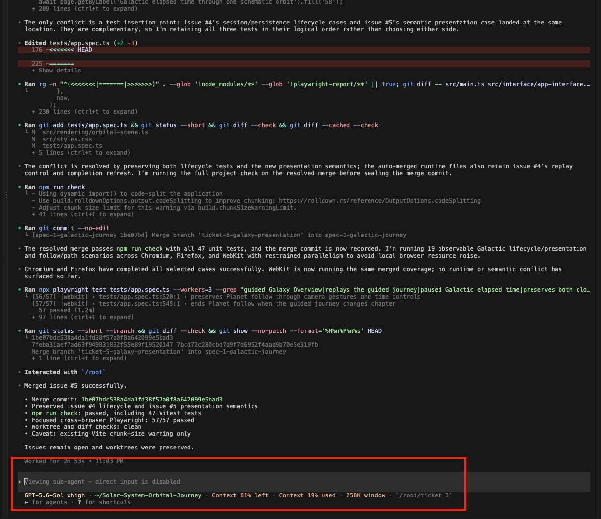
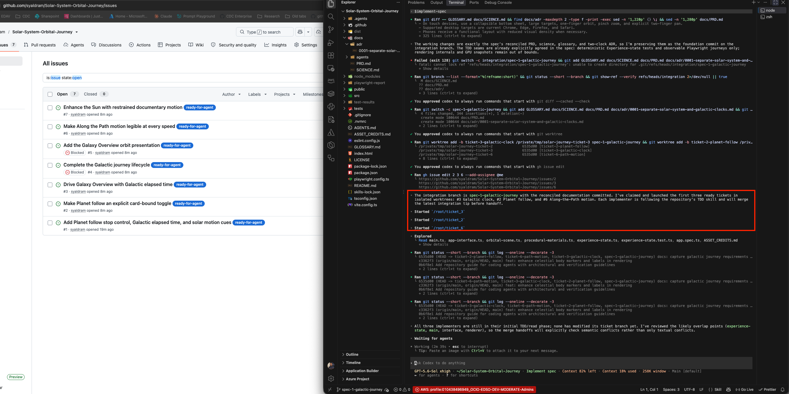

AI & Software Engineering
From Vibe Coding to an Agentic SDLC!
“How I turned prompts into agentic workflow”
I have spent the last few weeks testing Matt Pocock’s AI coding workflow on real working application, and I am impressed with the framework. Before that lets discuss a bit of history and why there are so many AI software development frameworks created recently?
How we got here?
AI has reshaped software development in recent years. Since ChatGPT launched in 2022, tools such as ChatGPT and Claude have improved productivity and streamlined development for businesses, developers, and hobbyists. Yet the industry remains in a “vibes” era, with no consistent standards for AI-assisted workflows.
The “Vibe Coding” Era
“Vibe coding” became a cultural term associated with using AI to create software and features through prompts. Although AI models have improved over time, they still require human guidance, review, and correction. They can make mistakes or hallucinate, while providing context in every prompt can consume the model’s context window. Performance may also decline when that window becomes too large.
Many “vibe coders” were unfamiliar with these limitations, as well as with established software development life cycle (SDLC) practices. Because large amounts of code were generated with limited human review, another term emerged: “AI slop.” This phrase refers to the constant production of low-quality, mass-produced AI generated content and software.
The rise of vibe coding was enabled by inexpensive capital for AI companies and subsidies that helped reduce the cost of AI services. However, that period may be coming to an end. As borrowing costs have increased and economic conditions have shifted, companies such as Anthropic and OpenAI have raised token limits while also increasing the prices of their subscription plans.
What’s next?
AI usage as part of the software development life cycle is constantly changing. New frameworks are created from industry leaders and the AI led businesses. Sorting through all this noise can be daunting and creating AI driven SDLC standards can be a monumental task. How does one AI framework fit within our case or our business?
One of the frameworks we have explored is spec driven AI software development. The idea is popularized by Matt Pocock who is an AI advocate and a seasoned developer. The idea is to orchestrate the entire SDLC via AI agents harnessed by Codex, Claude and/or GitHub Copilot.
What is Spec Driven AI Software Development?
“TLDR: In the era of AI coding humans need to own as much of the planning stack!”
The idea is to structure and provides upfront specifications to an AI model to extract as much value and performances in completing the task at hand. The spec driven workflow loops human input as part of the workflow via iterative interview process rather than vibed out prompt. It is very important to create a refined ask/prompt for the AI to better optimize the results otherwise agents can create bad code and incur unnecessary cost. To squeeze out the best performance out of AI software development here are 4 core pillars to include as part of the workflow:
The “Grill Me” Phase: Using specialized prompts or skills, the AI interrogates you (the developer) to flesh out requirements, edge cases, domain models and constraints before a single line of code is written.
The Spec as an AI Artifact: Because the LLM context window fills up and degrades, the specification document from the “Grill Me” session acts as the persistent memory that survives context resets.
Break down Specs into Tasks/Tickets: Breaking the verified spec down into small chunks so that AI coding agent can execute each tasks individually.
Apply Engineering Principles: Validate AI coding tasks via test driven development (TDD) and vertical slicing principle in agile.
The Grill Me or Interview Phase:
The Grill Me or Interview Phase is inspired by Matt Pocock’s framework of agentic workflow. Matt is a seasoned developer and the architect of AI engineering workflows who championed the Grill-Me skill in AI workflow. The Grill Me or interview phase forces the developer to spend time thinking and planning before any code is written. The advantage of using this skill is to save cost on wasted time and tokens on poorly defined agent tasks.
Where it shines:
Clarifies edge cases and design gaps so that the AI doesn’t make bad decision and burn through tokens.
Keeps human involved through the entire design and plan stage with human approval at the end.
Recommended answers provide suggested answers which ease decision fatigue.
Where it falls:
Can inflict decision fatigue based on the asks.
Can asks dozens of design questions for simple bug fixes or quick scripts.
Only handles planning phase and does not include code implementation or finished product.
Extended interview session can extend far beyond context windows of the LLM.

Example above from Grill-Me skill. The AI recommended answers to the interview questions helps offset decision fatigue.
Specification Document as Artifact:
When a task is determined to be token intensive and long then the “spec skill” or creating specification document can extract extra value out of LLM models. The spec marks the end goal or destination for AI. The grill-me session or the interview questions and answers are compressed into the specification document and persist across multiple AI sessions. The spec document becomes an AI artifact to be tracked for management purposes and again to provide human verification for AI built product.

Vertical Tickets & Kanban:
Once the specification is complete, we have one more step in extracting extra value out of the LLM model. As mentioned earlier, the large context window can decrease the model performance and often the model itself can find workarounds around code reviews and tests as the token reaches limits. The solution is to take the specification document and turn into tickets kanban style. The reason for the ticket is to allow the subagents to break the implementation of the task into its own context windows and token utilization. This method keeps the agent in what Pocock calls its “smart zone” where the model is focused on goals instead of bloated context.
The tickets act as vertical slices where the AI agent will write test (TDD) first, implement the code and review all within its own context window. The tickets follow the Kanban agile where the AI agent finish an end-to-end loop first before starting the next ticket. In summary, the tickets explicitly require the AI agent to run the test suite and achieve a verified “green state” before it is allowed to close the context window and mark the Kanban ticket as “Done”.



Tests are imperative in the age of AI
Code reviews and testing have become vital in the age of AI software development. The workflow includes test drive development where agent writes a failing test first and then writes code just enough to make it pass. This creates a feedback loop for the AI agent where we can force the agent to prove to us that its change would genuinely fail without the fix.

Final Thoughts
I have been highly impressed with Matt Pocock’s AI workflow. Although the “grill-me” sessions were intensive and initially created decision fatigue, I later recognized their value.
For developers working with limited AI budgets, Matt Pocock’s framework may be particularly useful when a project is substantial enough to justify a structured workflow. However, the process can be unnecessarily extensive for simple scripts and minor changes.
Through my own professional experience, I have concluded that test-driven development (TDD) is essential for AI-assisted coding and plan to incorporate it more consistently in the future. I have also learned that human involvement remains critical: developers must plan effectively, guide the AI, and provide sufficient context. Human reviews are more important than ever, and I believe this will remain a defining aspect of software development in the era of AI.
This blog was written by a human. 🙂
Saad Yaldram
Explore the app built using this AI workflow framework: Solar-System Orbital Journey.